大厂面试之JVM篇
1.什么是JVM?
JVM——Java虚拟机，它是Java实现平台无关性的基石。
Java程序运行的时候，编译器将Java文件编译成平台无关的Java字节码文件（.class）,接下来对应平台JVM对字节码文件进行解释，翻译成对应平台匹配的机器指令并运行。
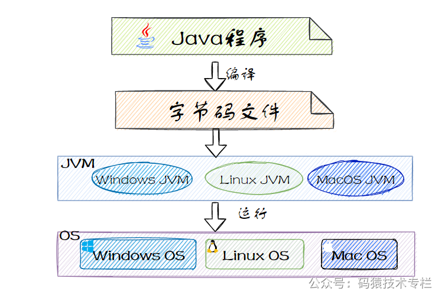同时JVM也是一个跨语言的平台，和语言无关，只和class的文件格式关联，任何语言，只要能翻译成符合规范的字节码文件，都能被JVM运行。
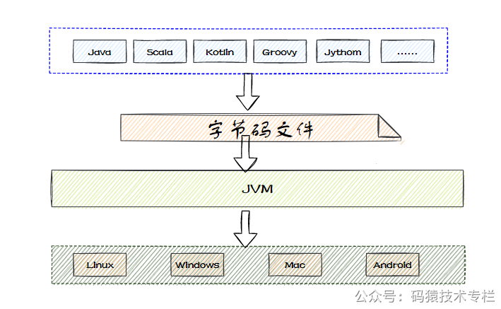内存管理
2.能说一下JVM的内存区域吗？
JVM内存区域最粗略的划分可以分为堆和栈，当然，按照虚拟机规范，可以划分为以下几个区域：
JVM内存分为线程私有区和线程共享区，其中方法区和堆是线程共享区，虚拟机栈、本地方法栈和程序计数器是线程隔离的数据区。
1、程序计数器
程序计数器（Program Counter Register）也被称为PC寄存器，是一块较小的内存空间。
它可以看作是当前线程所执行的字节码的行号指示器。
2、Java虚拟机栈
Java虚拟机栈（Java Virtual Machine Stack）也是线程私有的，它的生命周期与线程相同。
Java虚拟机栈描述的是Java方法执行的线程内存模型：方法执行时，JVM会同步创建一个栈帧，用来存储局部变量表、操作数栈、动态连接等。
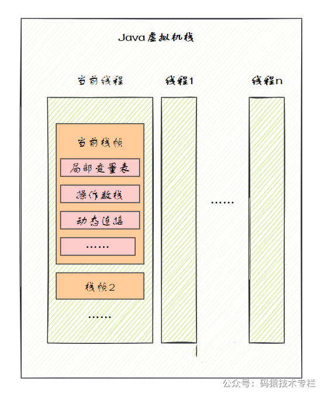3、本地方法栈
本地方法栈（Native Method Stacks）与虚拟机栈所发挥的作用是非常相似的，其区别只是虚拟机栈为虚拟机执行Java方法（也就是字节码）服务，而本地方法栈则是为虚拟机使用到的本地（Native）方法服务。
Java 虚拟机规范允许本地方法栈被实现成固定大小的或者是根据计算动态扩展和收缩的。
4、Java堆
对于Java应用程序来说，Java堆（Java Heap）是虚拟机所管理的内存中最大的一块。Java堆是被所有线程共享的一块内存区域，在虚拟机启动时创建。此内存区域的唯一目的就是存放对象实例，Java里“几乎”所有的对象实例都在这里分配内存。
Java堆是垃圾收集器管理的内存区域，因此一些资料中它也被称作“GC堆”（Garbage Collected Heap，）。从回收内存的角度看，由于现代垃圾收集器大部分都是基于分代收集理论设计的，所以Java堆中经常会出现新生代、老年代、Eden空间、From Survivor空间、To Survivor空间等名词，需要注意的是这种划分只是根据垃圾回收机制来进行的划分，不是Java虚拟机规范本身制定的。
5.方法区
方法区是比较特别的一块区域，和堆类似，它也是各个线程共享的内存区域，用于存储已被虚拟机加载的类型信息、常量、静态变量、即时编译器编译后的代码缓存等数据。
它特别在Java虚拟机规范对它的约束非常宽松，所以方法区的具体实现历经了许多变迁，例如jdk1.7之前使用永久代作为方法区的实现。
3.说一下JDK1.6、1.7、1.8内存区域的变化？
JDK1.6、1.7/1.8内存区域发生了变化，主要体现在方法区的实现：
- JDK1.6使用永久代实现方法区：
- JDK1.7时发生了一些变化，将字符串常量池、静态变量，存放在堆上
- 在JDK1.8时彻底干掉了永久代，而在直接内存中划出一块区域作为元空间，运行时常量池、类常量池都移动到元空间。
4.为什么使用元空间替代永久代作为方法区的实现？
Java虚拟机规范规定的方法区只是换种方式实现。有客观和主观两个原因。
- 客观上使用永久代来实现方法区的决定的设计导致了Java应用更容易遇到内存溢出的问题（永久代有-XX：MaxPermSize的上限，即使不设置也有默认大小，而J9和JRockit只要没有触碰到进程可用内存的上限，例如32位系统中的4GB限制，就不会出问题），而且有极少数方法 （例如String::intern()）会因永久代的原因而导致不同虚拟机下有不同的表现。
- 主观上当Oracle收购BEA获得了JRockit的所有权后，准备把JRockit中的优秀功能，譬如Java Mission Control管理工具，移植到HotSpot 虚拟机时，但因为两者对方法区实现的差异而面临诸多困难。考虑到HotSpot未来的发展，在JDK 6的 时候HotSpot开发团队就有放弃永久代，逐步改为采用本地内存（Native Memory）来实现方法区的计划了，到了JDK 7的HotSpot，已经把原本放在永久代的字符串常量池、静态变量等移出，而到了 JDK 8，终于完全废弃了永久代的概念，改用与JRockit、J9一样在本地内存中实现的元空间（Meta-space）来代替，把JDK 7中永久代还剩余的内容（主要是类型信息）全部移到元空间中。
5.对象创建的过程了解吗？
在JVM中对象的创建，我们从一个new指令开始：
- 首先检查这个指令的参数是否能在常量池中定位到一个类的符号引用
- 检查这个符号引用代表的类是否已被加载、解析和初始化过。如果没有，就先执行相应的类加载过程
- 类加载检查通过后，接下来虚拟机将为新生对象分配内存。
- 内存分配完成之后，虚拟机将分配到的内存空间（但不包括对象头）都初始化为零值。
- 接下来设置对象头，请求头里包含了对象是哪个类的实例、如何才能找到类的元数据信息、对象的哈希码、对象的GC分代年龄等信息。
这个过程大概图示如下：
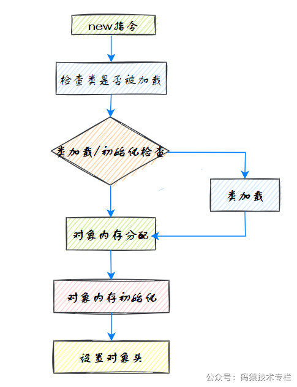6.什么是指针碰撞？什么是空闲列表？
内存分配有两种方式，指针碰撞（Bump The Pointer）、空闲列表（Free List）。
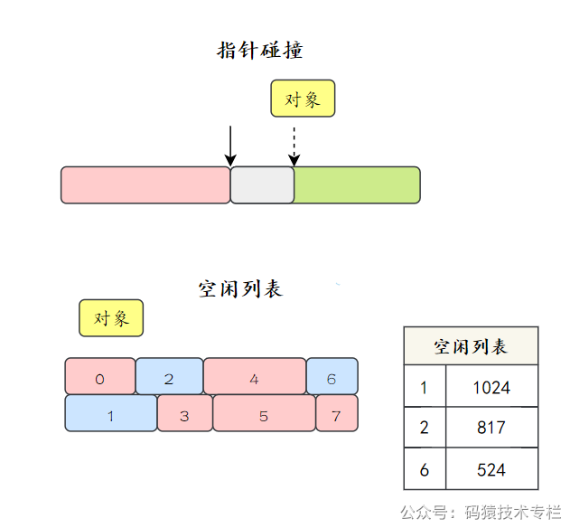- 指针碰撞：假设Java堆中内存是绝对规整的，所有被使用过的内存都被放在一边，空闲的内存被放在另一边，中间放着一个指针作为分界点的指示器，那所分配内存就仅仅是把那个指针向空闲空间方向挪动一段与对象大小相等的距离，这种分配方式称为“指针碰撞”。
- 空闲列表：如果Java堆中的内存并不是规整的，已被使用的内存和空闲的内存相互交错在一起，那就没有办法简单地进行指针碰撞了，虚拟机就必须维护一个列表，记录上哪些内存块是可用的，在分配的时候从列表中找到一块足够大的空间划分给对象实例，并更新列表上的记录，这种分配方式称为“空闲列表”。
- 两种方式的选择由Java堆是否规整决定，Java堆是否规整是由选择的垃圾收集器是否具有压缩整理能力决定的。
7.JVM 里 new 对象时，堆会发生抢占吗？JVM是怎么设计来保证线程安全的？
会，假设JVM虚拟机上，每一次new 对象时，指针就会向右移动一个对象size的距离，一个线程正在给A对象分配内存，指针还没有来的及修改，另一个为B对象分配内存的线程，又引用了这个指针来分配内存，这就发生了抢占。
有两种可选方案来解决这个问题：
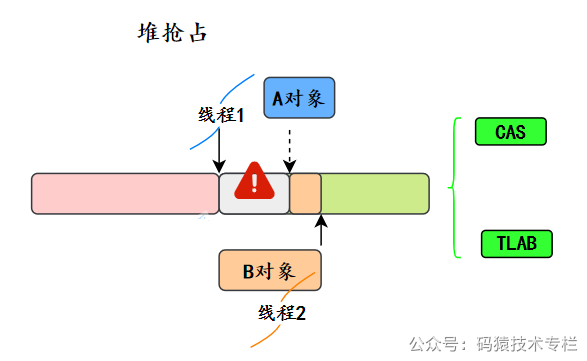- 采用CAS分配重试的方式来保证更新操作的原子性
- 每个线程在Java堆中预先分配一小块内存，也就是本地线程分配缓冲（Thread Local Allocation
Buffer，TLAB），要分配内存的线程，先在本地缓冲区中分配，只有本地缓冲区用完了，分配新的缓存区时才需要同步锁定。
8.能说一下对象的内存布局吗？
在HotSpot虚拟机里，对象在堆内存中的存储布局可以划分为三个部分：对象头（Header）、实例数据（Instance Data）和对齐填充（Padding）。
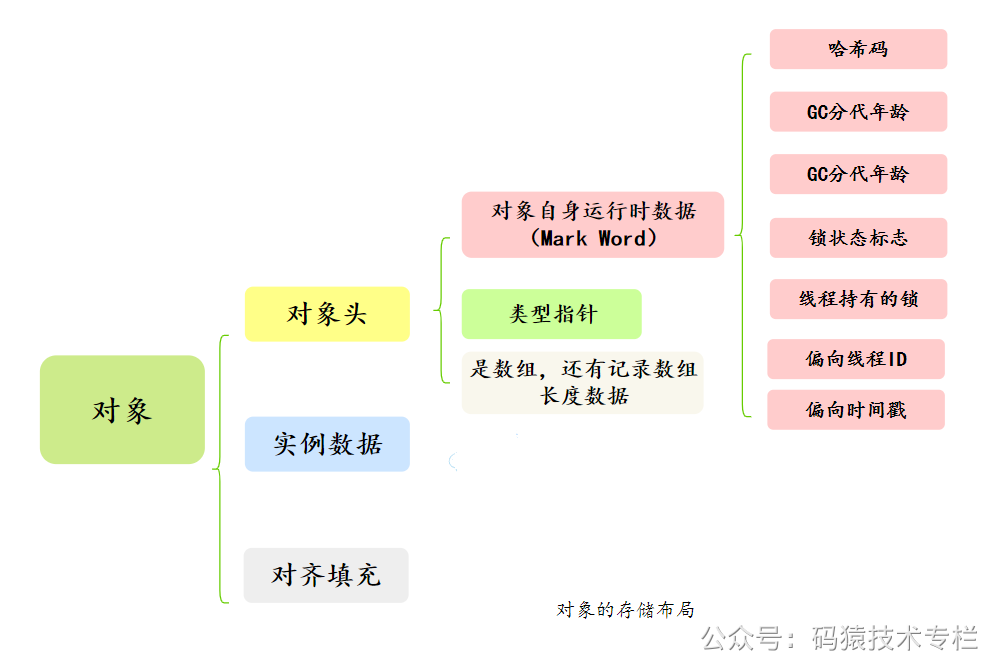对象头主要由两部分组成：
- 第一部分存储对象自身的运行时数据：哈希码、GC分代年龄、锁状态标志、线程持有的锁、偏向线程ID、偏向时间戳等，官方称它为Mark Word，它是个动态的结构，随着对象状态变化。
- 第二部分是类型指针，指向对象的类元数据类型（即对象代表哪个类）。
- 此外，如果对象是一个Java数组，那还应该有一块用于记录数组长度的数据
实例数据用来存储对象真正的有效信息，也就是我们在程序代码里所定义的各种类型的字段内容，无论是从父类继承的，还是自己定义的。
对齐填充不是必须的，没有特别含义，仅仅起着占位符的作用。
9.对象怎么访问定位？
Java程序会通过栈上的reference数据来操作堆上的具体对象。由于reference类型在《Java虚拟机规范》里面只规定了它是一个指向对象的引用，并没有定义这个引用应该通过什么方式去定位、访问到堆中对象的具体位置，所以对象访问方式也是由虚拟机实现而定的，主流的访问方式主要有使用句柄和直接指针两种：
- 如果使用句柄访问的话，Java堆中将可能会划分出一块内存来作为句柄池，reference中存储的就是对象的句柄地址，而句柄中包含了对象实例数据与类型数据各自具体的地址信息，其结构如图所示：
- 如果使用直接指针访问的话，Java堆中对象的内存布局就必须考虑如何放置访问类型数据的相关信息，reference中存储的直接就是对象地址，如果只是访问对象本身的话，就不需要多一次间接访问的开销，如图所示：
这两种对象访问方式各有优势，使用句柄来访问的最大好处就是reference中存储的是稳定句柄地址，在对象被移动（垃圾收集时移动对象是非常普遍的行为）时只会改变句柄中的实例数据指针，而reference本身不需要被修改。
使用直接指针来访问最大的好处就是速度更快，它节省了一次指针定位的时间开销，由于对象访问在Java中非常频繁，因此这类开销积少成多也是一项极为可观的执行成本。
HotSpot虚拟机主要使用直接指针来进行对象访问。
10.内存溢出和内存泄漏是什么意思？
内存泄露就是申请的内存空间没有被正确释放，导致内存被白白占用。
内存溢出就是申请的内存超过了可用内存，内存不够了。
两者关系：内存泄露可能会导致内存溢出。
用一个有味道的比喻，内存溢出就是排队去蹲坑，发现没坑位了，内存泄漏，就是有人占着茅坑不拉屎，占着茅坑不拉屎的多了可能会导致坑位不够用。
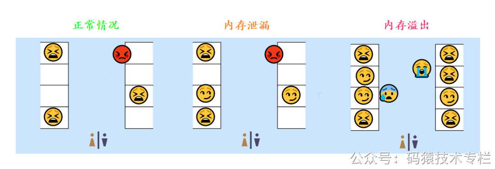11.能手写内存溢出的例子吗？
在JVM的几个内存区域中，除了程序计数器外，其他几个运行时区域都有发生内存溢出（OOM）异常的可能，重点关注堆和栈。
- Java堆溢出
Java堆用于储存对象实例，只要不断创建不可被回收的对象，比如静态对象，那么随着对象数量的增加，总容量触及最大堆的容量限制后就会产生内存溢出异常（OutOfMemoryError）。
这就相当于一个房子里，不断堆积不能被收走的杂物，那么房子很快就会被堆满了。
/**
* VM参数： -Xms20m -Xmx20m -XX:+HeapDumpOnOutOfMemoryError
*/
public class HeapOOM {
static class OOMObject {
}
public static void main(String[] args) {
List<OOMObject> list = new ArrayList<OOMObject>();
while (true) {
list.add(new OOMObject());
}
}
}- 虚拟机栈.OutOfMemoryError
JDK使用的HotSpot虚拟机的栈内存大小是固定的，我们可以把栈的内存设大一点，然后不断地去创建线程，因为操作系统给每个进程分配的内存是有限的，所以到最后，也会发生OutOfMemoryError异常。
/**
* vm参数：-Xss2M
*/
public class JavaVMStackOOM {
private void dontStop() {
while (true) {
}
}
public void stackLeakByThread() {
while (true) {
Thread thread = new Thread(new Runnable() {
public void run() {
dontStop();
}
});
thread.start();
}
}
public static void main(String[] args) throws Throwable {
JavaVMStackOOM oom = new JavaVMStackOOM();
oom.stackLeakByThread();
}
}12.内存泄漏可能由哪些原因导致呢？
内存泄漏可能的原因有很多种：
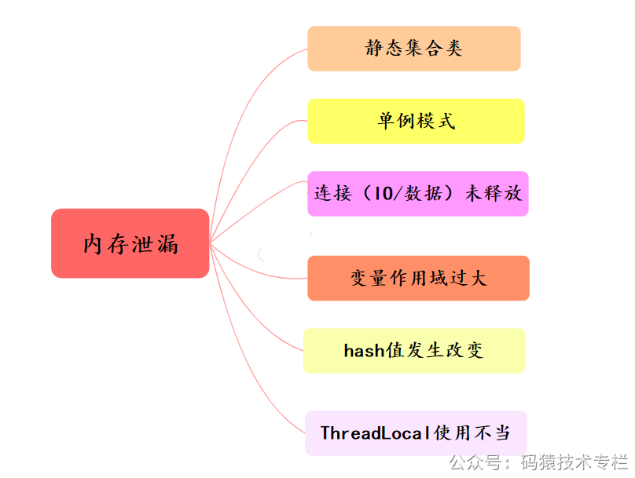静态集合类引起内存泄漏
静态集合的生命周期和 JVM 一致，所以静态集合引用的对象不能被释放。
public class OOM {
static List list = new ArrayList();
public void oomTests(){
Object obj = new Object();
list.add(obj);
}
}单例模式
和上面的例子原理类似，单例对象在初始化后会以静态变量的方式在 JVM 的整个生命周期中存在。如果单例对象持有外部的引用，那么这个外部对象将不能被 GC 回收，导致内存泄漏。
数据连接、IO、Socket等连接
创建的连接不再使用时，需要调用 close 方法关闭连接，只有连接被关闭后，GC 才会回收对应的对象（Connection，Statement，ResultSet，Session）。忘记关闭这些资源会导致持续占有内存，无法被 GC 回收。
try {
Connection conn = null;
Class.forName("com.mysql.jdbc.Driver");
conn = DriverManager.getConnection("url", "", "");
Statement stmt = conn.createStatement();
ResultSet rs = stmt.executeQuery("....");
} catch (Exception e) {
}finally {
//不关闭连接
}
}变量不合理的作用域
一个变量的定义作用域大于其使用范围，很可能存在内存泄漏；或不再使用对象没有及时将对象设置为 null，很可能导致内存泄漏的发生。
public class Simple {
Object object;
public void method1(){
object = new Object();
//...其他代码
//由于作用域原因，method1执行完成之后，object 对象所分配的内存不会马上释放
object = null;
}
}hash值发生变化
对象Hash值改变，使用HashMap、HashSet等容器中时候，由于对象修改之后的Hah值和存储进容器时的Hash值不同，所以无法找到存入的对象，自然也无法单独删除了，这也会造成内存泄漏。说句题外话，这也是为什么String类型被设置成了不可变类型。
ThreadLocal使用不当
ThreadLocal的弱引用导致内存泄漏也是个老生常谈的话题了，使用完ThreadLocal一定要记得使用remove方法来进行清除。
13.如何判断对象仍然存活？
有两种方式，引用计数算法（reference counting）和可达性分析算法。
- 引用计数算法
引用计数器的算法是这样的：在对象中添加一个引用计数器，每当有一个地方引用它时，计数器值就加一；当引用失效时，计数器值就减一；任何时刻计数器为零的对象就是不可能再被使用的。
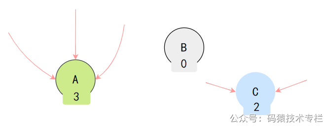- 可达性分析算法
目前 Java 虚拟机的主流垃圾回收器采取的是可达性分析算法。这个算法的实质在于将一系列 GC Roots 作为初始的存活对象合集（Gc Root Set），然后从该合集出发，探索所有能够被该集合引用到的对象，并将其加入到该集合中，这个过程我们也称之为标记（mark）。最终，未被探索到的对象便是死亡的，是可以回收的。
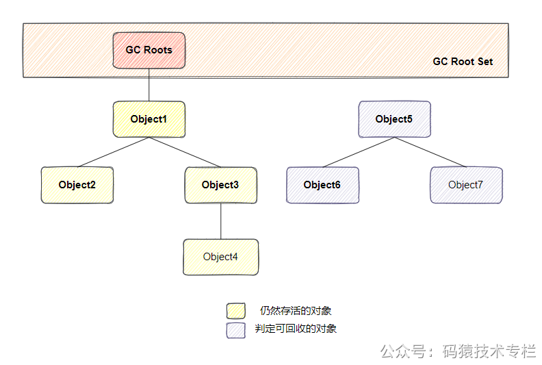14.Java中可作为GC Roots的对象有哪几种？
可以作为GC Roots的主要有四种对象：
- 虚拟机栈(栈帧中的本地变量表)中引用的对象
- 方法区中类静态属性引用的对象
- 方法区中常量引用的对象
- 本地方法栈中JNI引用的对象
15.说一下对象有哪几种引用？
Java中的引用有四种，分为强引用（Strongly Reference）、软引用（Soft Reference）、弱引用（Weak Reference）和虚引用（Phantom Reference）4种，这4种引用强度依次逐渐减弱。
- 强引用是最传统的
引用的定义，是指在程序代码之中普遍存在的引用赋值，无论任何情况下，只要强引用关系还存在，垃圾收集器就永远不会回收掉被引用的对象。
Object obj =new Object();- 软引用是用来描述一些还有用，但非必须的对象。只被软引用关联着的对象，在系统将要发生内存溢出异常前，会把这些对象列进回收范围之中进行第二次回收，如果这次回收还没有足够的内存， 才会抛出内存溢出异常。在JDK 1.2版之后提供了SoftReference类来实现软引用。
Object obj = new Object();
ReferenceQueue queue = new ReferenceQueue();
SoftReference reference = new SoftReference(obj, queue);
//强引用对象滞空，保留软引用
obj = null;- 弱引用也是用来描述那些非必须对象，但是它的强度比软引用更弱一些，被弱引用关联的对象只能生存到下一次垃圾收集发生为止。当垃圾收集器开始工作，无论当前内存是否足够，都会回收掉只被弱引用关联的对象。在JDK 1.2版之后提供了WeakReference类来实现弱引用。
Object obj = new Object();
ReferenceQueue queue = new ReferenceQueue();
WeakReference reference = new WeakReference(obj, queue);
//强引用对象滞空，保留软引用
obj = null;- 虚引用也称为“幽灵引用”或者“幻影引用”，它是最弱的一种引用关系。一个对象是否有虚引用的存在，完全不会对其生存时间构成影响，也无法通过虚引用来取得一个对象实例。为一个对象设置虚引用关联的唯一目的只是为了能在这个对象被收集器回收时收到一个系统通知。在JDK 1.2版之后提供了PhantomReference类来实现虚引用。
Object obj = new Object();
ReferenceQueue queue = new ReferenceQueue();
PhantomReference reference = new PhantomReference(obj, queue);
//强引用对象滞空，保留软引用
obj = null;16.finalize()方法了解吗？有什么作用？
用一个不太贴切的比喻，垃圾回收就是古代的秋后问斩，finalize()就是刀下留人，在人犯被处决之前，还要做最后一次审计，青天大老爷看看有没有什么冤情，需不需要刀下留人。
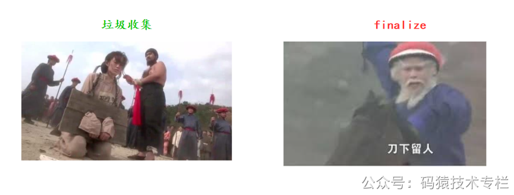如果对象在进行可达性分析后发现没有与GC Roots相连接的引用链，那它将会被第一次标记，随后进行一次筛选，筛选的条件是此对象是否有必要执行finalize()方法。如果对象在在finalize()中成功拯救自己——只要重新与引用链上的任何一个对象建立关联即可，譬如把自己 （this关键字）赋值给某个类变量或者对象的成员变量，那在第二次标记时它就”逃过一劫“；但是如果没有抓住这个机会，那么对象就真的要被回收了。
17.Java堆的内存分区了解吗？
按照垃圾收集，将Java堆划分为新生代 （Young Generation）和老年代（Old Generation）两个区域，新生代存放存活时间短的对象，而每次回收后存活的少量对象，将会逐步晋升到老年代中存放。
而新生代又可以分为三个区域，eden、from、to，比例是8：1：1，而新生代的内存分区同样是从垃圾收集的角度来分配的。
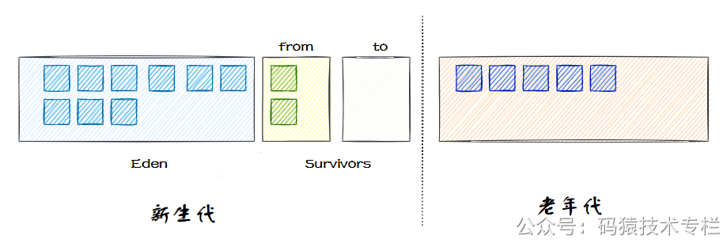18.垃圾收集算法了解吗？
垃圾收集算法主要有三种：
- 标记-清除算法
见名知义，标记-清除（Mark-Sweep）算法分为两个阶段：
- 标记 : 标记出所有需要回收的对象
- 清除：回收所有被标记的对象
标记-清除算法比较基础，但是主要存在两个缺点：
- 执行效率不稳定，如果Java堆中包含大量对象，而且其中大部分是需要被回收的，这时必须进行大量标记和清除的动作，导致标记和清除两个过程的执行效率都随对象数量增长而降低。
- 内存空间的碎片化问题，标记、清除之后会产生大量不连续的内存碎片，空间碎片太多可能会导致当以后在程序运行过程中需要分配较大对象时无法找到足够的连续内存而不得不提前触发另一次垃圾收集动作。
- 标记-复制算法
标记-复制算法解决了标记-清除算法面对大量可回收对象时执行效率低的问题。
过程也比较简单：将可用内存按容量划分为大小相等的两块，每次只使用其中的一块。当这一块的内存用完了，就将还存活着的对象复制到另外一块上面，然后再把已使用过的内存空间一次清理掉。
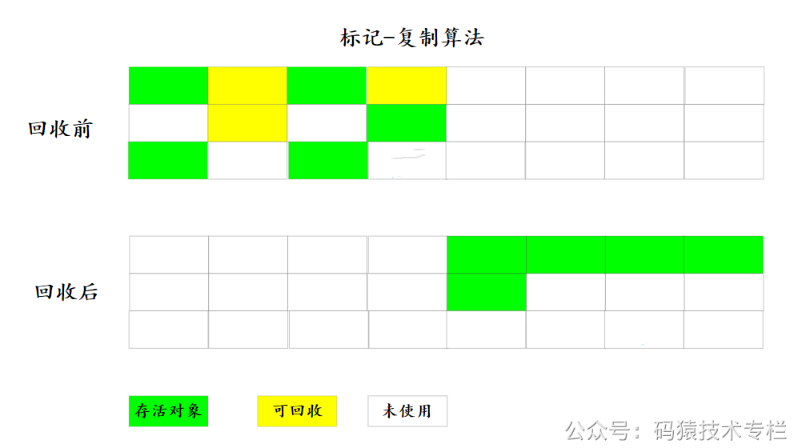这种算法存在一个明显的缺点：一部分空间没有使用，存在空间的浪费。
新生代垃圾收集主要采用这种算法，因为新生代的存活对象比较少，每次复制的只是少量的存活对象。当然，实际新生代的收集不是按照这个比例。
- 标记-整理算法
为了降低内存的消耗，引入一种针对性的算法：标记-整理（Mark-Compact）算法。
其中的标记过程仍然与“标记-清除”算法一样，但后续步骤不是直接对可回收对象进行清理，而是让所有存活的对象都向内存空间一端移动，然后直接清理掉边界以外的内存。
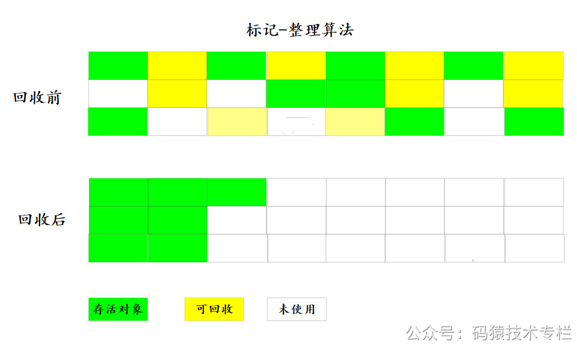标记-整理算法主要用于老年代，移动存活对象是个极为负重的操作，而且这种操作需要Stop The World才能进行，只是从整体的吞吐量来考量，老年代使用标记-整理算法更加合适。
19.说一下新生代的区域划分？
新生代的垃圾收集主要采用标记-复制算法，因为新生代的存活对象比较少，每次复制少量的存活对象效率比较高。
基于这种算法，虚拟机将内存分为一块较大的Eden空间和两块较小的 Survivor空间，每次分配内存只使用Eden和其中一块Survivor。发生垃圾收集时，将Eden和Survivor中仍然存活的对象一次性复制到另外一块Survivor空间上，然后直接清理掉Eden和已用过的那块Survivor空间。默认Eden和Survivor的大小比例是8∶1。
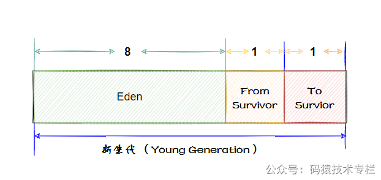20.Minor GC/Young GC、Major GC/Old GC、Mixed GC、Full GC都是什么意思？
部分收集（Partial GC）：指目标不是完整收集整个Java堆的垃圾收集，其中又分为：
- 新生代收集（Minor GC/Young GC）：指目标只是新生代的垃圾收集。
- 老年代收集（Major GC/Old GC）：指目标只是老年代的垃圾收集。目前只有CMS收集器会有单独收集老年代的行为。
- 混合收集（Mixed GC）：指目标是收集整个新生代以及部分老年代的垃圾收集。目前只有G1收集器会有这种行为。
整堆收集（Full GC）：收集整个Java堆和方法区的垃圾收集。
21.Minor GC/Young GC什么时候触发？
新创建的对象优先在新生代Eden区进行分配，如果Eden区没有足够的空间时，就会触发Young GC来清理新生代。
22.什么时候会触发Full GC？
这个触发条件稍微有点多，往下看：
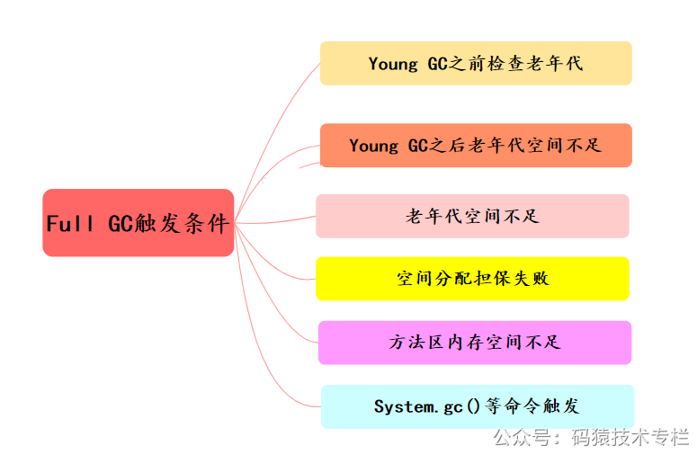- Young GC之前检查老年代：在要进行 Young GC 的时候，发现
老年代可用的连续内存空间<新生代历次Young GC后升入老年代的对象总和的平均大小，说明本次Young GC后可能升入老年代的对象大小，可能超过了老年代当前可用内存空间,那就会触发 Full GC。 - Young GC之后老年代空间不足：执行Young GC之后有一批对象需要放入老年代，此时老年代就是没有足够的内存空间存放这些对象了，此时必须立即触发一次Full GC
- 老年代空间不足，老年代内存使用率过高，达到一定比例，也会触发Full GC。
- 空间分配担保失败（ Promotion Failure），新生代的 To 区放不下从 Eden 和 From 拷贝过来对象，或者新生代对象 GC 年龄到达阈值需要晋升这两种情况，老年代如果放不下的话都会触发 Full GC。
- 方法区内存空间不足：如果方法区由永久代实现，永久代空间不足 Full GC。
- System.gc()等命令触发：System.gc()、jmap -dump 等命令会触发 full gc。
23.对象什么时候会进入老年代？
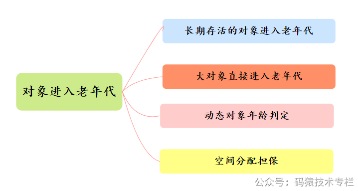长期存活的对象将进入老年代
在对象的对象头信息中存储着对象的迭代年龄,迭代年龄会在每次YoungGC之后对象的移区操作中增加,每一次移区年龄加一.当这个年龄达到15(默认)之后,这个对象将会被移入老年代。
可以通过这个参数设置这个年龄值。
- XX:MaxTenuringThreshold大对象直接进入老年代
有一些占用大量连续内存空间的对象在被加载就会直接进入老年代.这样的大对象一般是一些数组,长字符串之类的对。
HotSpot虚拟机提供了这个参数来设置。
-XX：PretenureSizeThreshold动态对象年龄判定
为了能更好地适应不同程序的内存状况，HotSpot虚拟机并不是永远要求对象的年龄必须达到- XX：MaxTenuringThreshold才能晋升老年代，如果在Survivor空间中相同年龄所有对象大小的总和大于Survivor空间的一半，年龄大于或等于该年龄的对象就可以直接进入老年代。
空间分配担保
假如在Young GC之后，新生代仍然有大量对象存活，就需要老年代进行分配担保，把Survivor无法容纳的对象直接送入老年代。
24.知道有哪些垃圾收集器吗？
主要垃圾收集器如下，图中标出了它们的工作区域、垃圾收集算法，以及配合关系。
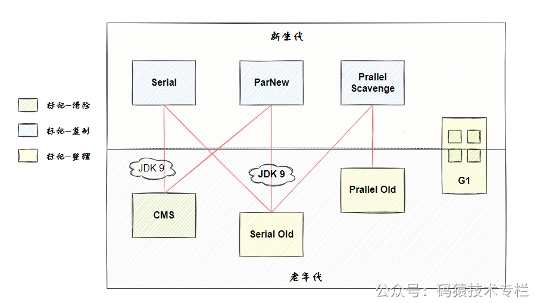这些收集器里，面试的重点是两个——CMS和G1。
- Serial收集器
Serial收集器是最基础、历史最悠久的收集器。
如同它的名字（串行），它是一个单线程工作的收集器，使用一个处理器或一条收集线程去完成垃圾收集工作。并且进行垃圾收集时，必须暂停其他所有工作线程，直到垃圾收集结束——这就是所谓的“Stop The World”。
Serial/Serial Old收集器的运行过程如图：
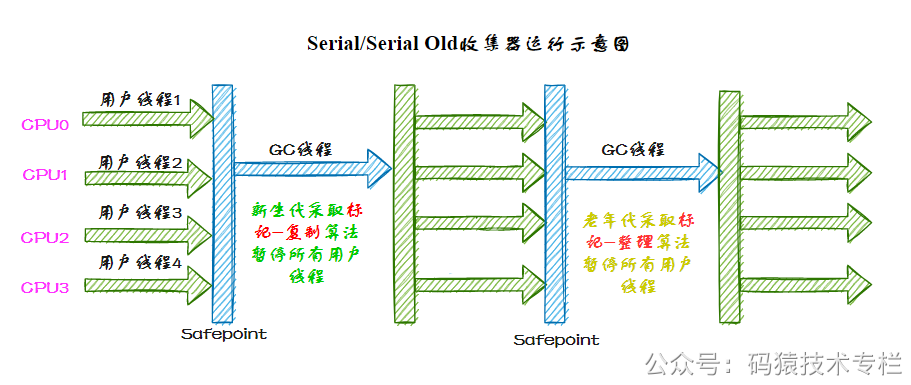- ParNew
ParNew收集器实质上是Serial收集器的多线程并行版本，使用多条线程进行垃圾收集。
我们可以通过选项 “-XX:+UseParNewGC” 手动指定使用 ParNew 收集器执行垃圾收集任务
ParNew/Serial Old收集器运行示意图如下：
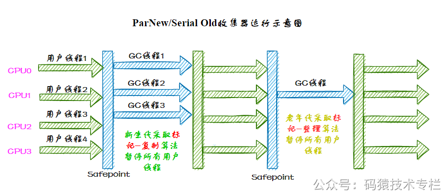- Parallel Scavenge
Parallel Scavenge收集器是一款新生代收集器，基于标记-复制算法实现，也能够并行收集。和ParNew有些类似，但Parallel Scavenge主要关注的是垃圾收集的吞吐量——所谓吞吐量，就是CPU用于运行用户代码的时间和总消耗时间的比值，比值越大，说明垃圾收集的占比越小。
JDK1.8默认的新生代收集器，采用标记-复制算法
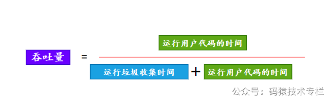- Serial Old
Serial Old是Serial收集器的老年代版本，它同样是一个单线程收集器，使用标记-整理算法。
- Parallel Old
Parallel Old是Parallel Scavenge收集器的老年代版本，支持多线程并发收集，基于标记-整理算法实现。
JDK1.8 默认的老年代垃圾收集器
我们可以通过参数 -XX: +UseParalleloldGC 手动指定老年代使用 Parallel Old 并行收集器
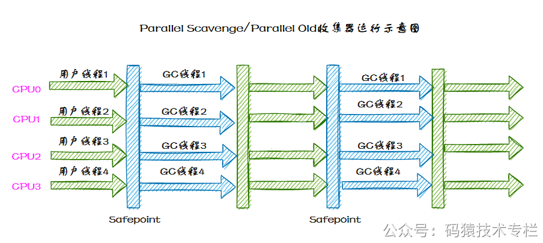- CMS收集器
CMS（Concurrent Mark Sweep）收集器是一种以获取最短回收停顿时间为目标的收集器，同样是老年代的收集器，采用标记-清除算法。
- Garbage First收集器
Garbage First（简称G1）收集器是垃圾收集器的一个颠覆性的产物，它开创了局部收集的设计思路和基于Region的内存布局形式。
可以使用参数：-XX:+UseG1GC 指定G1垃圾收集器
25.什么是Stop The World ? 什么是 OopMap ？什么是安全点？
进行垃圾回收的过程中，会涉及对象的移动。为了保证对象引用更新的正确性，必须暂停所有的用户线程，像这样的停顿，虚拟机设计者形象描述为Stop The World。也简称为STW。
在HotSpot中，有个数据结构（映射表）称为OopMap。一旦类加载动作完成的时候，HotSpot就会把对象内什么偏移量上是什么类型的数据计算出来，记录到OopMap。在即时编译过程中，也会在特定的位置生成 OopMap，记录下栈上和寄存器里哪些位置是引用。
这些特定的位置主要在：
- 1.循环的末尾（非 counted 循环）
- 2.方法临返回前 / 调用方法的call指令后
- 3.可能抛异常的位置
这些位置就叫作安全点(safepoint)。 用户程序执行时并非在代码指令流的任意位置都能够在停顿下来开始垃圾收集，而是必须是执行到安全点才能够暂停。
用通俗的比喻，假如老王去拉车，车上东西很重，老王累的汗流浃背，但是老王不能在上坡或者下坡休息，只能在平地上停下来擦擦汗，喝口水。
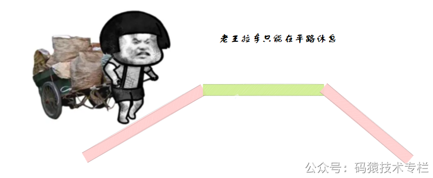26.能详细说一下CMS收集器的垃圾收集过程吗？
CMS收集齐的垃圾收集分为四步：
- 初始标记（CMS initial mark）：单线程运行，需要Stop The World，标记GC Roots能直达的对象。
- 并发标记（（CMS concurrent mark）：无停顿，和用户线程同时运行，从GC Roots直达对象开始遍历整个对象图。
- 重新标记（CMS remark）：多线程运行，需要Stop The World，标记并发标记阶段产生对象。
- 并发清除（CMS concurrent sweep）：无停顿，和用户线程同时运行，清理掉标记阶段标记的死亡的对象。
Concurrent Mark Sweep收集器运行示意图如下：
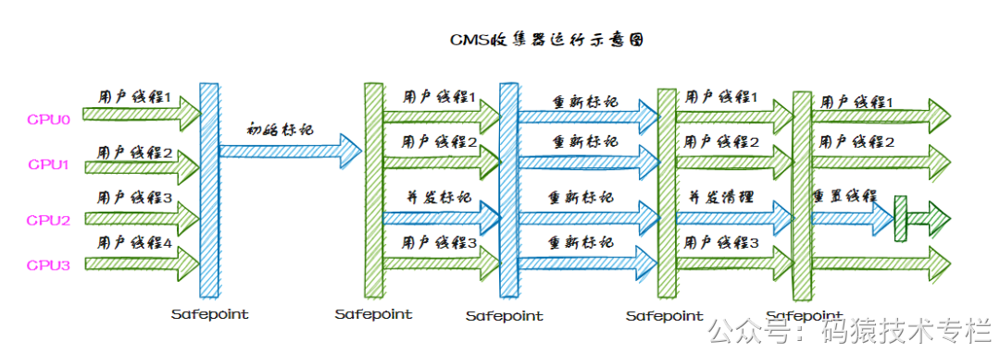27.G1垃圾收集器了解吗？
Garbage First（简称G1）收集器是垃圾收集器的一个颠覆性的产物，它开创了局部收集的设计思路和基于Region的内存布局形式。
虽然G1也仍是遵循分代收集理论设计的，但其堆内存的布局与其他收集器有非常明显的差异。以前的收集器分代是划分新生代、老年代、持久代等。
G1把连续的Java堆划分为多个大小相等的独立区域（Region），每一个Region都可以根据需要，扮演新生代的Eden空间、Survivor空间，或者老年代空间。收集器能够对扮演不同角色的Region采用不同的策略去处理。
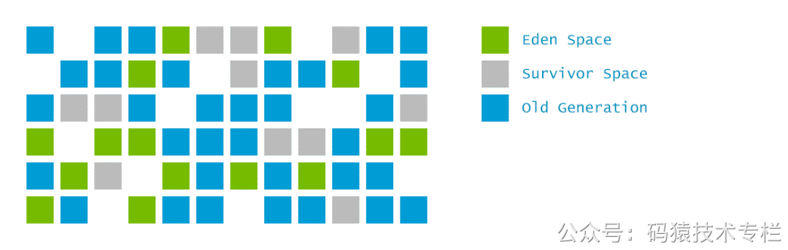这样就避免了收集整个堆，而是按照若干个Region集进行收集，同时维护一个优先级列表，跟踪各个Region回收的“价值，优先收集价值高的Region。
G1收集器的运行过程大致可划分为以下四个步骤：
- 初始标记（initial mark），标记了从GC Root开始直接关联可达的对象。STW（Stop the World）执行。
- 并发标记（concurrent marking），和用户线程并发执行，从GC Root开始对堆中对象进行可达性分析，递归扫描整个堆里的对象图，找出要回收的对象、
- 最终标记（Remark），STW，标记再并发标记过程中产生的垃圾。
- 筛选回收（Live Data Counting And Evacuation），制定回收计划，选择多个Region 构成回收集，把回收集中Region的存活对象复制到空的Region中，再清理掉整个旧 Region的全部空间。需要STW。
28.有了CMS，为什么还要引入G1？
优点：CMS最主要的优点在名字上已经体现出来——并发收集、低停顿。
缺点：CMS同样有三个明显的缺点。
- Mark Sweep算法会导致内存碎片比较多
- CMS的并发能力比较依赖于CPU资源，并发回收时垃圾收集线程可能会抢占用户线程的资源，导致用户程序性能下降。
- 并发清除阶段，用户线程依然在运行，会产生所谓的理“浮动垃圾”（Floating Garbage），本次垃圾收集无法处理浮动垃圾，必须到下一次垃圾收集才能处理。如果浮动垃圾太多，会触发新的垃圾回收，导致性能降低。
G1主要解决了内存碎片过多的问题。
29.你们线上用的什么垃圾收集器？为什么要用它？
怎么说呢，虽然调优说的震天响，但是我们一般都是用默认。管你Java怎么升，我用8，那么JDK1.8默认用的是什么呢？
可以使用命令：
java -XX:+PrintCommandLineFlags -version可以看到有这么一行：
-XX:+UseParallelGCUseParallelGC = Parallel Scavenge + Parallel Old，表示的是新生代用的Parallel Scavenge收集器，老年代用的是Parallel Old 收集器。
那为什么要用这个呢？默认的呗。
当然面试肯定不能这么答。
Parallel Scavenge的特点是什么？
高吞吐，我们可以回答：因为我们系统是业务相对复杂，但并发并不是非常高，所以希望尽可能的利用处理器资源，出于提高吞吐量的考虑采用Parallel Scavenge + Parallel Old的组合。
当然，这个默认虽然也有说法，但不太讨喜。
还可以说：
采用Parallel New+CMS的组合，我们比较关注服务的响应速度，所以采用了CMS来降低停顿时间。
或者一步到位：
我们线上采用了设计比较优秀的G1垃圾收集器，因为它不仅满足我们低停顿的要求，而且解决了CMS的浮动垃圾问题、内存碎片问题。
30.垃圾收集器应该如何选择？
垃圾收集器的选择需要权衡的点还是比较多的——例如运行应用的基础设施如何？使用JDK的发行商是什么？等等……
这里简单地列一下上面提到的一些收集器的适用场景：
- Serial ：如果应用程序有一个很小的内存空间（大约100 MB）亦或它在没有停顿时间要求的单线程处理器上运行。
- Parallel：如果优先考虑应用程序的峰值性能，并且没有时间要求要求，或者可以接受1秒或更长的停顿时间。
- CMS/G1：如果响应时间比吞吐量优先级高，或者垃圾收集暂停必须保持在大约1秒以内。
- ZGC：如果响应时间是高优先级的，或者堆空间比较大。
31.对象一定分配在堆中吗？有没有了解逃逸分析技术？
对象一定分配在堆中吗？ 不一定的。
随着JIT编译期的发展与逃逸分析技术逐渐成熟，所有的对象都分配到堆上也渐渐变得不那么“绝对”了。其实，在编译期间，JIT会对代码做很多优化。其中有一部分优化的目的就是减少内存堆分配压力，其中一种重要的技术叫做逃逸分析。
什么是逃逸分析？
逃逸分析是指分析指针动态范围的方法，它同编译器优化原理的指针分析和外形分析相关联。当变量（或者对象）在方法中分配后，其指针有可能被返回或者被全局引用，这样就会被其他方法或者线程所引用，这种现象称作指针（或者引用）的逃逸(Escape)。
通俗点讲，当一个对象被new出来之后，它可能被外部所调用，如果是作为参数传递到外部了，就称之为方法逃逸。
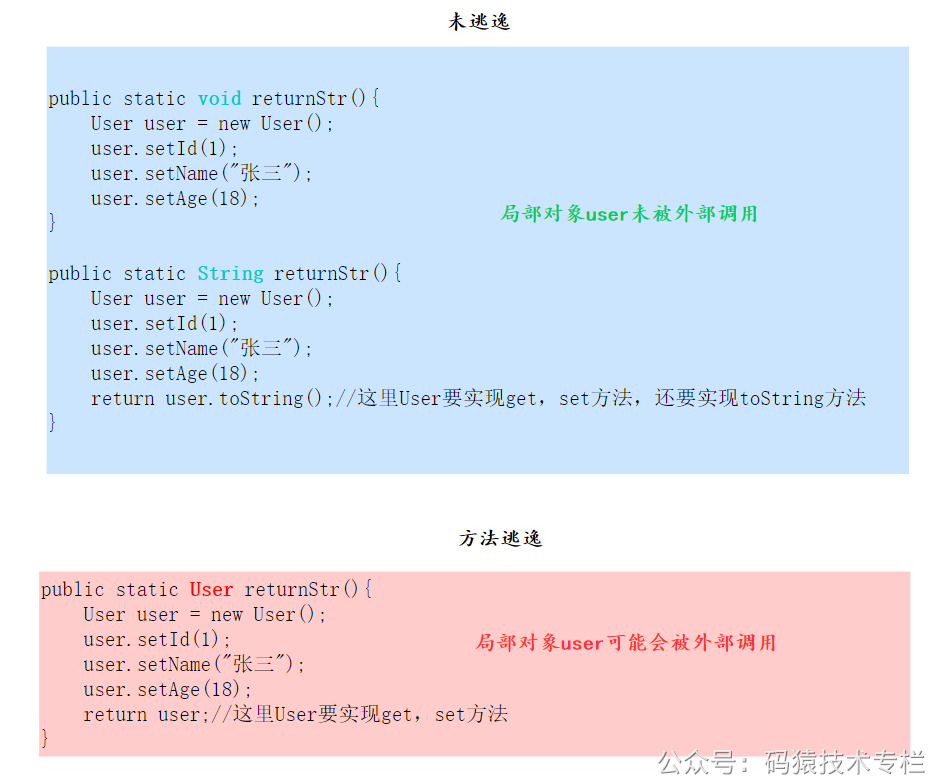除此之外，如果对象还有可能被外部线程访问到，例如赋值给可以在其它线程中访问的实例变量，这种就被称为线程逃逸。
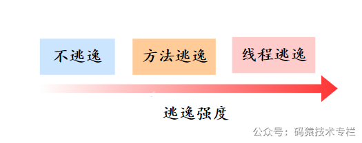逃逸分析的好处
- 栈上分配
如果确定一个对象不会逃逸到线程之外，那么久可以考虑将这个对象在栈上分配，对象占用的内存随着栈帧出栈而销毁，这样一来，垃圾收集的压力就降低很多。
- 同步消除
线程同步本身是一个相对耗时的过程，如果逃逸分析能够确定一个变量不会逃逸出线程，无法被其他线程访问，那么这个变量的读写肯定就不会有竞争， 对这个变量实施的同步措施也就可以安全地消除掉。
- 标量替换
如果一个数据是基本数据类型，不可拆分，它就被称之为标量。把一个Java对象拆散，将其用到的成员变量恢复为原始类型来访问，这个过程就称为标量替换。假如逃逸分析能够证明一个对象不会被方法外部访问，并且这个对象可以被拆散，那么可以不创建对象，直接用创建若干个成员变量代替，可以让对象的成员变量在栈上分配和读写。
JVM调优
32.有哪些常用的命令行性能监控和故障处理工具？
操作系统工具
- top：显示系统整体资源使用情况
- vmstat：监控内存和CPU
- iostat：监控IO使用
- netstat：监控网络使用
JDK性能监控工具
- jps：虚拟机进程查看
- jstat：虚拟机运行时信息查看
- jinfo：虚拟机配置查看
- jmap：内存映像（导出）
- jhat：堆转储快照分析
- jstack：Java堆栈跟踪
- jcmd：实现上面除了jstat外所有命令的功能
33.了解哪些可视化的性能监控和故障处理工具？
以下是一些JDK自带的可视化性能监控和故障处理工具：
- JConsole
- VisualVM
- Java Mission Control
除此之外，还有一些第三方的工具：
- MAT
Java 堆内存分析工具。
- GChisto
GC 日志分析工具。
- GCViewer
GC 日志分析工具。
- JProfiler
商用的性能分析利器。
- arthas
阿里开源诊断工具。
- async-profiler
Java 应用性能分析工具，开源、火焰图、跨平台。
34.JVM的常见参数配置知道哪些？
一些常见的参数配置：
堆配置：
- -Xms:初始堆大小
- -Xmx：最大堆大小
- -XX:NewSize=n:设置年轻代大小
- -XX:NewRatio=n:设置年轻代和年老代的比值。如：为3表示年轻代和年老代比值为1：3，年轻代占整个年轻代年老代和的1/4
- -XX:SurvivorRatio=n:年轻代中Eden区与两个Survivor区的比值。注意Survivor区有两个。如3表示Eden：3 Survivor：2，一个Survivor区占整个年轻代的1/5
- -XX:MaxPermSize=n:设置持久代大小
收集器设置：
- -XX:+UseSerialGC:设置串行收集器
- -XX:+UseParallelGC:设置并行收集器
- -XX:+UseParalledlOldGC:设置并行年老代收集器
- -XX:+UseConcMarkSweepGC:设置并发收集器
并行收集器设置
- -XX:ParallelGCThreads=n:设置并行收集器收集时使用的CPU数。并行收集线程数
- -XX:MaxGCPauseMillis=n:设置并行收集最大的暂停时间（如果到这个时间了，垃圾回收器依然没有回收完，也会停止回收）
- -XX:GCTimeRatio=n:设置垃圾回收时间占程序运行时间的百分比。公式为：1/(1+n)
- -XX:+CMSIncrementalMode:设置为增量模式。适用于单CPU情况
- -XX:ParallelGCThreads=n:设置并发收集器年轻代手机方式为并行收集时，使用的CPU数。并行收集线程数
打印GC回收的过程日志信息
- -XX:+PrintGC
- -XX:+PrintGCDetails
- -XX:+PrintGCTimeStamps
- -Xloggc:filename
35.有做过JVM调优吗？
JVM调优是一件很严肃的事情，不是拍脑门就开始调优的，需要有严密的分析和监控机制，大概的一个JVM调优流程图：
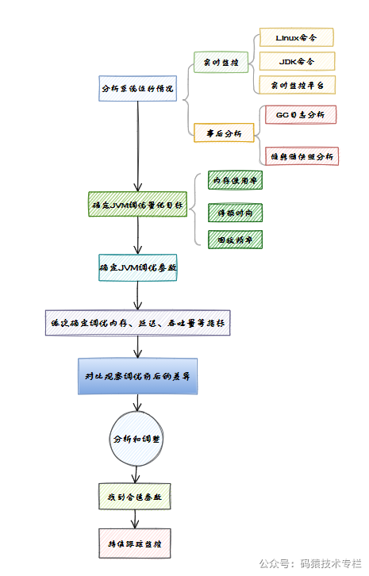实际上，JVM调优是不得已而为之，有那功夫，好好把烂代码重构一下不比瞎调JVM强。
但是，面试官非要问怎么办？可以从处理问题的角度来回答（对应图中事后），这是一个中规中矩的案例：电商公司的运营后台系统，偶发性的引发OOM异常，堆内存溢出。
1、因为是偶发性的，所以第一次简单的认为就是堆内存不足导致，单方面的加大了堆内存从4G调整到8G -Xms8g。
2、但是问题依然没有解决，只能从堆内存信息下手，通过开启了-XX:+HeapDumpOnOutOfMemoryError参数 获得堆内存的dump文件。
3、用JProfiler 对 堆dump文件进行分析，通过JProfiler查看到占用内存最大的对象是String对象，本来想跟踪着String对象找到其引用的地方，但dump文件太大，跟踪进去的时候总是卡死，而String对象占用比较多也比较正常，最开始也没有认定就是这里的问题，于是就从线程信息里面找突破点。
4、通过线程进行分析，先找到了几个正在运行的业务线程，然后逐一跟进业务线程看了下代码，有个方法引起了我的注意，导出订单信息。
5、因为订单信息导出这个方法可能会有几万的数据量，首先要从数据库里面查询出来订单信息，然后把订单信息生成excel，这个过程会产生大量的String对象。
6、为了验证自己的猜想，于是准备登录后台去测试下，结果在测试的过程中发现导出订单的按钮前端居然没有做点击后按钮置灰交互事件，后端也没有做防止重复提交，因为导出订单数据本来就非常慢，使用的人员可能发现点击后很久后页面都没反应，然后就一直点，结果就大量的请求进入到后台，堆内存产生了大量的订单对象和EXCEL对象，而且方法执行非常慢，导致这一段时间内这些对象都无法被回收，所以最终导致内存溢出。
7、知道了问题就容易解决了，最终没有调整任何JVM参数，只是做了两个处理：
- 在前端的导出订单按钮上加上了置灰状态，等后端响应之后按钮才可以进行点击
- 后端代码加分布式锁，做防重处理
这样双管齐下，保证导出的请求不会一直打到服务端，问题解决！
36.线上服务CPU占用过高怎么排查？
问题分析：CPU高一定是某个程序长期占用了CPU资源。
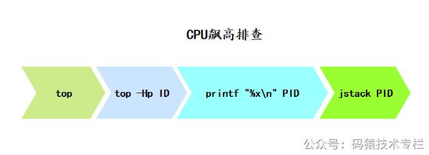1、所以先需要找出那个进程占用CPU高。
- top 列出系统各个进程的资源占用情况。
2、然后根据找到对应进行里哪个线程占用CPU高。
- top -Hp 进程ID 列出对应进程里面的线程占用资源情况
3、找到对应线程ID后，再打印出对应线程的堆栈信息
- printf “%x\n” PID 把线程ID转换为16进制。
- jstack PID 打印出进程的所有线程信息，从打印出来的线程信息中找到上一步转换为16进制的线程ID对应的线程信息。
4、最后根据线程的堆栈信息定位到具体业务方法,从代码逻辑中找到问题所在。
查看是否有线程长时间的watting 或blocked，如果线程长期处于watting状态下， 关注watting on xxxxxx，说明线程在等待这把锁，然后根据锁的地址找到持有锁的线程。
37.内存飙高问题怎么排查？
分析：内存飚高如果是发生在java进程上，一般是因为创建了大量对象所导致，持续飚高说明垃圾回收跟不上对象创建的速度，或者内存泄露导致对象无法回收。
1、先观察垃圾回收的情况
- jstat -gc PID 1000 查看GC次数，时间等信息，每隔一秒打印一次。
- jmap -histo PID | head -20 查看堆内存占用空间最大的前20个对象类型,可初步查看是哪个对象占用了内存。
如果每次GC次数频繁，而且每次回收的内存空间也正常，那说明是因为对象创建速度快导致内存一直占用很高；如果每次回收的内存非常少，那么很可能是因为内存泄露导致内存一直无法被回收。
2、导出堆内存文件快照
- jmap -dump:live,format=b,file=/home/myheapdump.hprof PID dump堆内存信息到文件。
3、使用visualVM对dump文件进行离线分析，找到占用内存高的对象，再找到创建该对象的业务代码位置，从代码和业务场景中定位具体问题。
38.频繁 minor gc 怎么办？
优化Minor GC频繁问题：通常情况下，由于新生代空间较小，Eden区很快被填满，就会导致频繁Minor GC，因此可以通过增大新生代空间-Xmn来降低Minor GC的频率。
39.频繁Full GC怎么办？
Full GC的排查思路大概如下：
- 清楚从程序角度，有哪些原因导致FGC？
- 大对象：系统一次性加载了过多数据到内存中（比如SQL查询未做分页），导致大对象进入了老年代。
- 内存泄漏：频繁创建了大量对象，但是无法被回收（比如IO对象使用完后未调用close方法释放资源），先引发FGC，最后导致OOM.
- 程序频繁生成一些长生命周期的对象，当这些对象的存活年龄超过分代年龄时便会进入老年代，最后引发FGC. （即本文中的案例）
- 程序BUG
- 代码中显式调用了gc方法，包括自己的代码甚至框架中的代码。
- JVM参数设置问题：包括总内存大小、新生代和老年代的大小、Eden区和S区的大小、元空间大小、垃圾回收算法等等。
- 清楚排查问题时能使用哪些工具
- 公司的监控系统：大部分公司都会有，可全方位监控JVM的各项指标。
- JDK的自带工具，包括jmap、jstat等常用命令：
# 查看堆内存各区域的使用率以及GC情况
jstat -gcutil -h20 pid 1000
# 查看堆内存中的存活对象，并按空间排序
jmap -histo pid | head -n20
# dump堆内存文件
jmap -dump:format=b,file=heap pid- 可视化的堆内存分析工具：JVisualVM、MAT等
- 排查指南
- 查看监控，以了解出现问题的时间点以及当前FGC的频率（可对比正常情况看频率是否正常）
- 了解该时间点之前有没有程序上线、基础组件升级等情况。
- 了解JVM的参数设置，包括：堆空间各个区域的大小设置，新生代和老年代分别采用了哪些垃圾收集器，然后分析JVM参数设置是否合理。
- 再对步骤1中列出的可能原因做排除法，其中元空间被打满、内存泄漏、代码显式调用gc方法比较容易排查。
- 针对大对象或者长生命周期对象导致的FGC，可通过 jmap -histo 命令并结合dump堆内存文件作进一步分析，需要先定位到可疑对象。
- 通过可疑对象定位到具体代码再次分析，这时候要结合GC原理和JVM参数设置，弄清楚可疑对象是否满足了进入到老年代的条件才能下结论。
40.有没有处理过内存泄漏问题？是如何定位的？
内存泄漏是内在病源，外在病症表现可能有：
- 应用程序长时间连续运行时性能严重下降
- CPU 使用率飙升，甚至到 100%
- 频繁 Full GC，各种报警，例如接口超时报警等
- 应用程序抛出
OutOfMemoryError错误 - 应用程序偶尔会耗尽连接对象
严重内存泄漏往往伴随频繁的 Full GC，所以分析排查内存泄漏问题首先还得从查看 Full GC 入手。主要有以下操作步骤：
- 使用
jps查看运行的 Java 进程 ID - 使用
top -p [pid]查看进程使用 CPU 和 MEM 的情况 - 使用
top -Hp [pid]查看进程下的所有线程占 CPU 和 MEM 的情况 - 将线程 ID 转换为 16 进制：
printf "%x\n" [pid]，输出的值就是线程栈信息中的 nid。
例如：printf "%x\n" 29471，换行输出 731f。 - 抓取线程栈：
jstack 29452 > 29452.txt，可以多抓几次做个对比。
在线程栈信息中找到对应线程号的 16 进制值，如下是 731f 线程的信息。线程栈分析可使用 Visualvm 插件 TDA。
"Service Thread" #7 daemon prio=9 os_prio=0 tid=0x00007fbe2c164000 nid=0x731f runnable [0x0000000000000000]
java.lang.Thread.State: RUNNABLE- 使用
jstat -gcutil [pid] 5000 10每隔 5 秒输出 GC 信息，输出 10 次，查看 YGC 和 Full GC 次数。通常会出现 YGC 不增加或增加缓慢，而 Full GC 增加很快。
或使用jstat -gccause [pid] 5000，同样是输出 GC 摘要信息。
或使用jmap -heap [pid]查看堆的摘要信息，关注老年代内存使用是否达到阀值，若达到阀值就会执行 Full GC。 - 如果发现
Full GC次数太多，就很大概率存在内存泄漏了 - 使用
jmap -histo:live [pid]输出每个类的对象数量，内存大小(字节单位)及全限定类名。 - 生成
dump文件，借助工具分析哪 个对象非常多，基本就能定位到问题在那了
使用 jmap 生成 dump 文件：
# jmap -dump:live,format=b,file=29471.dump 29471
Dumping heap to /root/dump ...
Heap dump file created可以使用 jhat 命令分析：jhat -port 8000 29471.dump，浏览器访问 jhat 服务，端口是 8000。
通常使用图形化工具分析，如 JDK 自带的 jvisualvm，从菜单 > 文件 > 装入 dump 文件。
或使用第三方式具分析的，如 JProfiler 也是个图形化工具，GCViewer 工具。Eclipse 或以使用 MAT 工具查看。或使用在线分析平台 GCEasy。
注意：如果 dump 文件较大的话，分析会占比较大的内存。
基本上就可以定位到代码层的逻辑了。
- 在 dump 文析结果中查找存在大量的对象，再查对其的引用。
- dump 文件分析
41.有没有处理过内存溢出问题？
内存泄漏和内存溢出二者关系非常密切，内存溢出可能会有很多原因导致，内存泄漏最可能的罪魁祸首之一。
排查过程和排查内存泄漏过程类似。
虚拟机执行
42.能说一下类的生命周期吗？
一个类从被加载到虚拟机内存中开始，到从内存中卸载，整个生命周期需要经过七个阶段：加载 （Loading）、验证（Verification）、准备（Preparation）、解析（Resolution）、初始化 （Initialization）、使用（Using）和卸载（Unloading），其中验证、准备、解析三个部分统称为连接（Linking）。
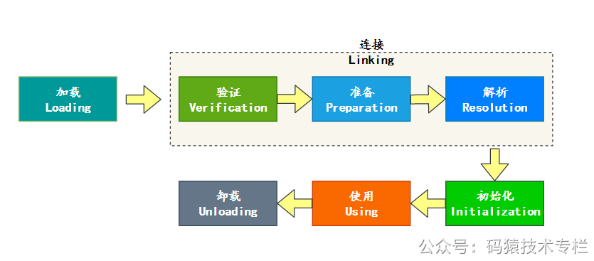43.类加载的过程知道吗？
加载是JVM加载的起点，具体什么时候开始加载，《Java虚拟机规范》中并没有进行强制约束，可以交给虚拟机的具体实现来自由把握。
在加载过程，JVM要做三件事情：
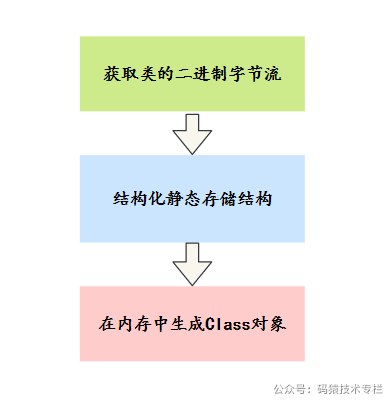- 1）通过一个类的全限定名来获取定义此类的二进制字节流。
- 2）将这个字节流所代表的静态存储结构转化为方法区的运行时数据结构。
- 3）在内存中生成一个代表这个类的java.lang.Class对象，作为方法区这个类的各种数据的访问入口。
加载阶段结束后，Java虚拟机外部的二进制字节流就按照虚拟机所设定的格式存储在方法区之中了，方法区中的数据存储格式完全由虚拟机实现自行定义，《Java虚拟机规范》未规定此区域的具体数据结构。
类型数据妥善安置在方法区之后，会在Java堆内存中实例化一个java.lang.Class类的对象， 这个对象将作为程序访问方法区中的类型数据的外部接口。
44.类加载器有哪些？
主要有四种类加载器:
- 启动类加载器(Bootstrap ClassLoader)用来加载java核心类库，无法被java程序直接引用。
- 扩展类加载器(extensions class loader):它用来加载 Java 的扩展库。Java 虚拟机的实现会提供一个扩展库目录。该类加载器在此目录里面查找并加载 Java 类。
- 系统类加载器（system class loader）：它根据 Java 应用的类路径（CLASSPATH）来加载Java 类。一般来说，Java 应用的类都是由它来完成加载的。可以通过ClassLoader.getSystemClassLoader()来获取它。
- 用户自定义类加载器 (user class loader)，用户通过继承 java.lang.ClassLoader类的方式自行实现的类加载器。
45.什么是双亲委派机制？
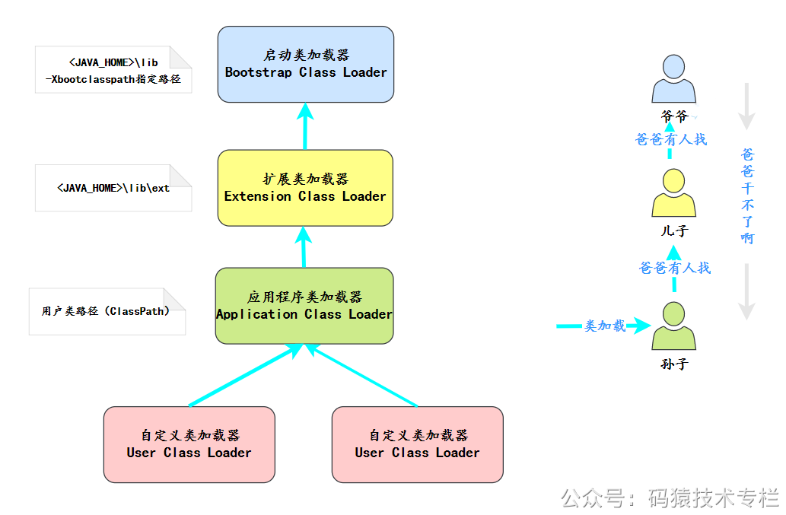双亲委派模型的工作过程：如果一个类加载器收到了类加载的请求，它首先不会自己去尝试加载这个类，而是把这个请求委派给父类加载器去完成，每一个层次的类加载器都是如此，因此所有的加载请求最终都应该传送到最顶层的启动类加载器中，只有当父加载器反馈自己无法完成这个加载请求时，子加载器才会尝试自己去完成加载。
46.为什么要用双亲委派机制？
答案是为了保证应用程序的稳定有序。
例如类java.lang.Object，它存放在rt.jar之中，通过双亲委派机制，保证最终都是委派给处于模型最顶端的启动类加载器进行加载，保证Object的一致。反之，都由各个类加载器自行去加载的话，如果用户自己也编写了一个名为java.lang.Object的类，并放在程序的 ClassPath中，那系统中就会出现多个不同的Object类。
47.如何破坏双亲委派机制？
如果不想打破双亲委派模型，就重写ClassLoader类中的fifindClass()方法即可，无法被父类加载器加载的类最终会通过这个方法被加载。而如果想打破双亲委派模型则需要重写loadClass()方法。
48.历史上有哪几次双亲委派机制的破坏？
双亲委派机制在历史上主要有三次破坏：
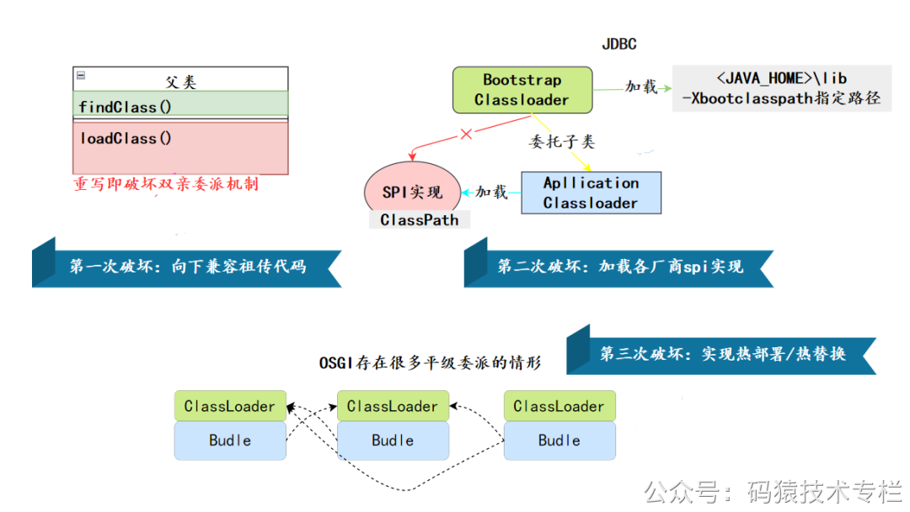第一次破坏
双亲委派模型的第一次“被破坏”其实发生在双亲委派模型出现之前——即JDK 1.2面世以前的“远古”时代。
由于双亲委派模型在JDK 1.2之后才被引入，但是类加载器的概念和抽象类 java.lang.ClassLoader则在Java的第一个版本中就已经存在，为了向下兼容旧代码，所以无法以技术手段避免loadClass()被子类覆盖的可能性，只能在JDK 1.2之后的java.lang.ClassLoader中添加一个新的 protected方法findClass()，并引导用户编写的类加载逻辑时尽可能去重写这个方法，而不是在 loadClass()中编写代码。
第二次破坏
双亲委派模型的第二次“被破坏”是由这个模型自身的缺陷导致的，如果有基础类型又要调用回用户的代码，那该怎么办呢？
例如我们比较熟悉的JDBC:
各个厂商各有不同的JDBC的实现，Java在核心包\lib里定义了对应的SPI，那么这个就毫无疑问由启动类加载器加载器加载。
但是各个厂商的实现，是没办法放在核心包里的，只能放在classpath里，只能被应用类加载器加载。那么，问题来了，启动类加载器它就加载不到厂商提供的SPI服务代码。
为了解决这个问题，引入了一个不太优雅的设计：线程上下文类加载器 （Thread Context ClassLoader）。这个类加载器可以通过java.lang.Thread类的setContext-ClassLoader()方法进行设置，如果创建线程时还未设置，它将会从父线程中继承一个，如果在应用程序的全局范围内都没有设置过的话，那这个类加载器默认就是应用程序类加载器。
JNDI服务使用这个线程上下文类加载器去加载所需的SPI服务代码，这是一种父类加载器去请求子类加载器完成类加载的行为。
第三次破坏
双亲委派模型的第三次“被破坏”是由于用户对程序动态性的追求而导致的，例如代码热替换（Hot Swap）、模块热部署（Hot Deployment）等。
OSGi实现模块化热部署的关键是它自定义的类加载器机制的实现，每一个程序模块（OSGi中称为 Bundle）都有一个自己的类加载器，当需要更换一个Bundle时，就把Bundle连同类加载器一起换掉以实现代码的热替换。在OSGi环境下，类加载器不再双亲委派模型推荐的树状结构，而是进一步发展为更加复杂的网状结构。
49.你觉得应该怎么实现一个热部署功能？
我们已经知道了Java类的加载过程。一个Java类文件到虚拟机里的对象，要经过如下过程:首先通过Java编译器，将Java文件编译成class字节码，类加载器读取class字节码，再将类转化为实例，对实例newInstance就可以生成对象。
类加载器ClassLoader功能，也就是将class字节码转换到类的实例。在Java应用中，所有的实例都是由类加载器，加载而来。
一般在系统中，类的加载都是由系统自带的类加载器完成，而且对于同一个全限定名的java类（如com.csiar.soc.HelloWorld），只能被加载一次，而且无法被卸载。
这个时候问题就来了，如果我们希望将java类卸载，并且替换更新版本的java类，该怎么做呢？
既然在类加载器中，Java类只能被加载一次，并且无法卸载。那么我们是不是可以直接把Java类加载器干掉呢？答案是可以的，我们可以自定义类加载器，并重写ClassLoader的findClass方法。
想要实现热部署可以分以下三个步骤：
- 销毁原来的自定义ClassLoader
- 更新class类文件
- 创建新的ClassLoader去加载更新后的class类文件。
到此，一个热部署的功能就这样实现了。
50.Tomcat的类加载机制了解吗？
Tomcat是主流的Java Web服务器之一，为了实现一些特殊的功能需求，自定义了一些类加载器。
Tomcat类加载器如下：
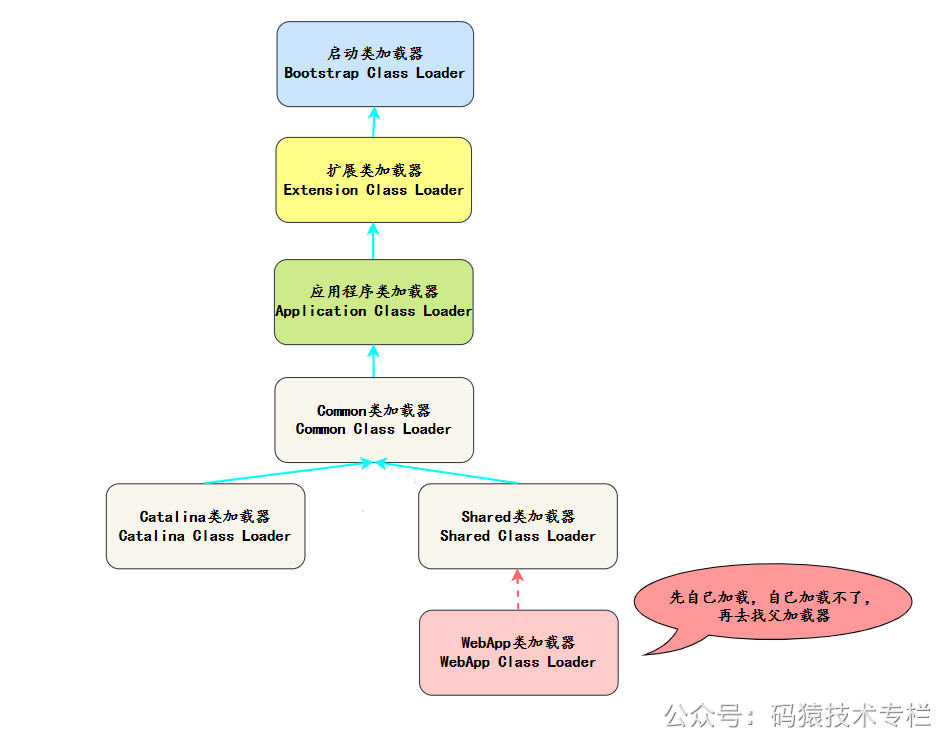Tomcat实际上也是破坏了双亲委派模型的。
Tomact是web容器，可能需要部署多个应用程序。不同的应用程序可能会依赖同一个第三方类库的不同版本，但是不同版本的类库中某一个类的全路径名可能是一样的。如多个应用都要依赖hollis.jar，但是A应用需要依赖1.0.0版本，但是B应用需要依赖1.0.1版本。这两个版本中都有一个类是com.hollis.Test.class。如果采用默认的双亲委派类加载机制，那么无法加载多个相同的类。
所以，Tomcat破坏了双亲委派原则，提供隔离的机制，为每个web容器单独提供一个WebAppClassLoader加载器。每一个WebAppClassLoader负责加载本身的目录下的class文件，加载不到时再交CommonClassLoader加载，这和双亲委派刚好相反。